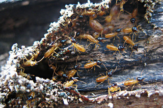

TermiteAlert.org
This website, www.termitealert.org, was created to communicate to and teach home owners dealing with the crisis of termite pests infestation within the state of Florida as well as other locations. Our objective is to give you the most complete website relating to home termite defense.
A modern research in Northern Florida concluded termite infestations have taken place in roughly two-thirds of the houses built after 1988. Despite being considered one of a homeowner’s biggest concerns, termite infestation does not get the consideration from the government, the construction sector and the pest control industry required to get rid of the problem.
Education about prevention and how to get rid of these pests is paramount to removal. Homeowners have to be well informed and take an active part in safeguarding their homes from termite invasion. They must not depend entirely on a builder or a pest control company to make vital choices about how their property is protected. Home owners must choose the most resilient building materials, the most reliable pest control company and the most effective chemical solution. The implications of not making the very best decisions for your greatest investment will be disastrous and result in financial ruin.

Many homeowners think state laws will safeguard them from termites and unfair and deceptive pest control companies. Regrettably, the state of Florida has some of the poorest and inadequate termite protection laws and regulations for existing homes in the south east. We hope to increase pest control laws to protect homeowners in Florida. The Florida Department of Agriculture has attempted to reinforce laws on several instances just to be beaten by the pest control industry. We hope to inspire homeowners to get hold of their law makers and urge them to tackle the termite problems facing us.
While our website is concentrated solely on termites, we understand they are not the only pests that homeowners have to deal with. If you're looking for other information such as how to get rid of roaches, or the best termite killer (also the best roach killer) please check out the links in the education page as well as Wikipedia for a place to start at.
We are constantly trying to gather information about termites, Florida laws and the pest control industry. Thus our website is constantly changing and we would appreciate your comments, input, experience, and stories.